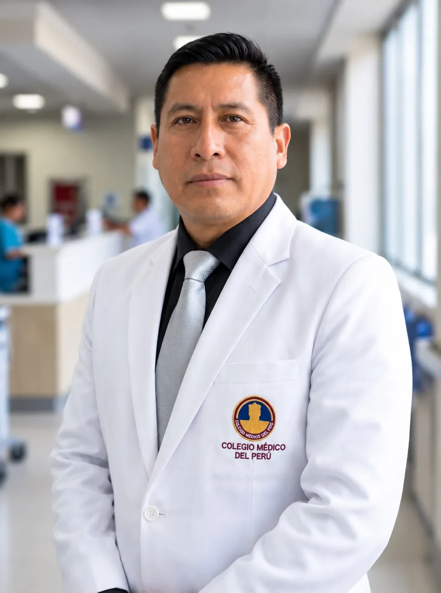

Escuchar
Tus síntomas, antecedentes y lo que te preocupa.

Cirugía general y laparoscópica.
Una relación de confianza se construye escuchando y explicando.
La evaluación comienza con comprender tu motivo de consulta y revisar las opciones disponibles. La recomendación de una cirugía se conversa después de una evaluación individual.
Especialidad indicada: cirugía general y laparoscopia.
La formación y los registros profesionales se incorporarán tras su verificación.
Tus síntomas, antecedentes y lo que te preocupa.
Revisar los estudios y explicar las opciones.
Acordar un plan de atención para tu caso.
Preparación, cuidados y seguimiento.